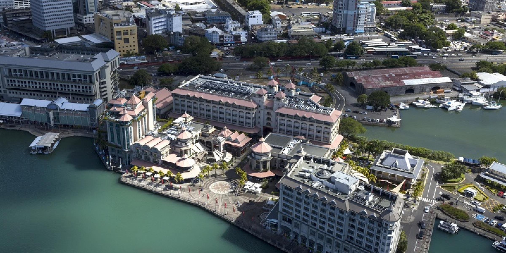

OVERALL QUALITY OF PORT-LOUIS
A Quick Summary
Port Louis, the cosmopolitan capital city of Mauritius was founded in 1735 by the French governor and pioneer Bertrand-François Mahé de La Bourdonnais. Located on the Northwest Coast, Port Louis is the administrative and business capital of the island. Buzzing with activity during the day, the city is full of cultural and historical treasures that should not be missed. Beyond the central market, which is a focal point for those who want to feel close to the soul of Mauritius, are many historic sites including the Champ de Mars - the oldest race course in the southern hemisphere.
Mauritius has seen a steady growth in it's GDP between 2006 and 2019, prompting us to believe that its economic prospects are quite good.